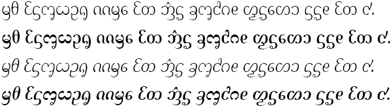
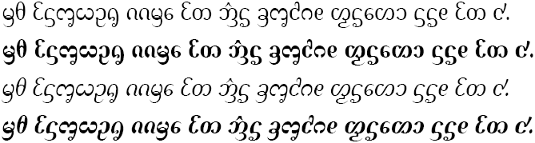

Dai Banna SIL - Design
Dai Banna SIL includes a complete set of New Tai Lue consonants, vowels, tones, and digits, along with punctuation and other useful symbols. A basic set of Latin glyphs, including Arabic numerals, is also provided. Apart from a few New Tai Lue characters and Chinese punctuation marks, the design is the same as its predecessor, SIL Dai Banna (obsolete). Two font families, differing only in weight, allow for a wide range of uses.
Dai Banna SIL Light

Dai Banna SIL Book

We particularly thank the Dai News Department of Xishuangbanna Daily for valuable advice during the development of this Unicode font package. Xishuangbanna Daily, established since 1957, is the largest newspaper company in Yunnan, China that publishes in the New Tai Lue script.
We are also grateful for the assistance of the Research Centre for the Minority Languages of China in developing the original, non-Unicode font package (SIL Dai Banna). The Research Centre for the Minority Languages of China is part of the Institute of Ethnology and Anthropology, Chinese Academy of Social Sciences located in Beijing, China.